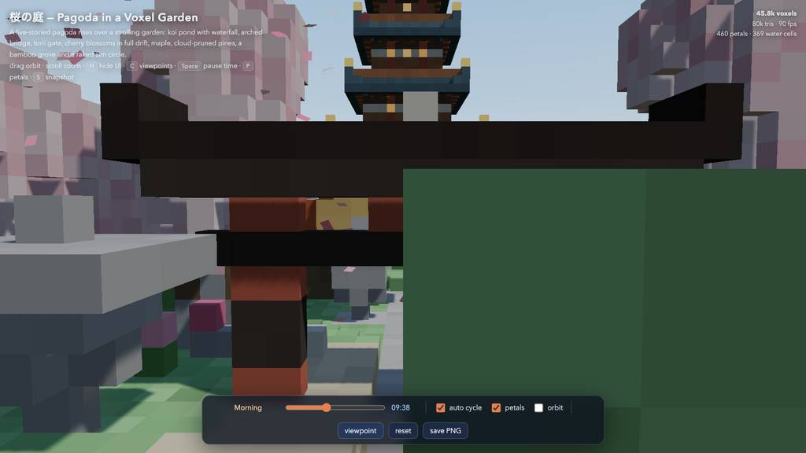
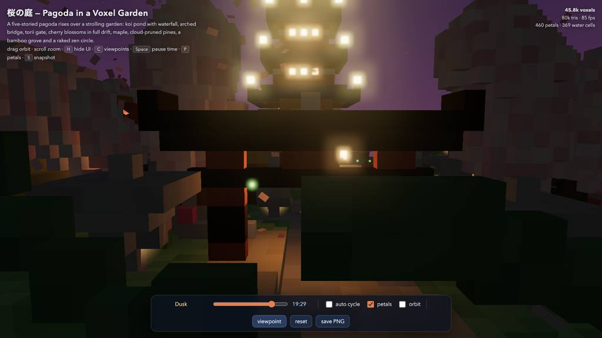
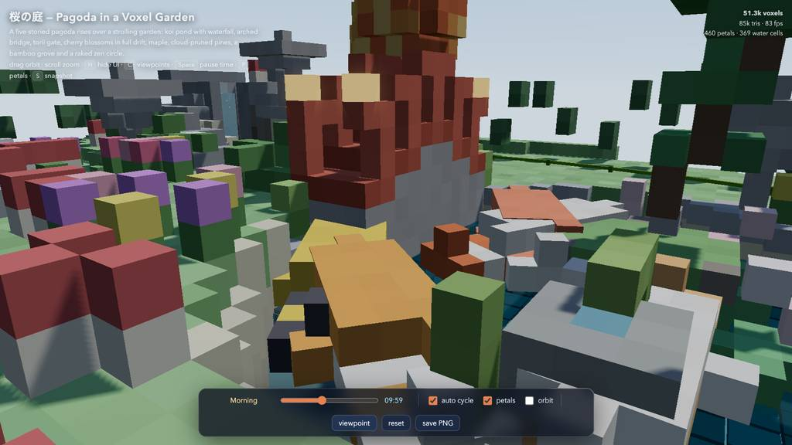
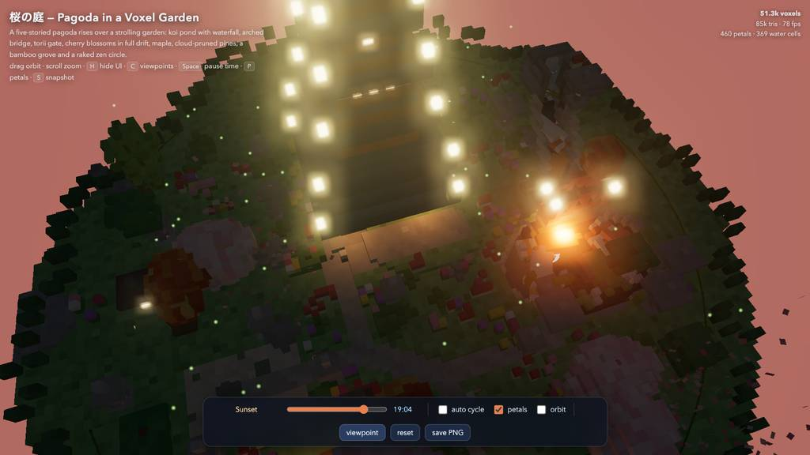
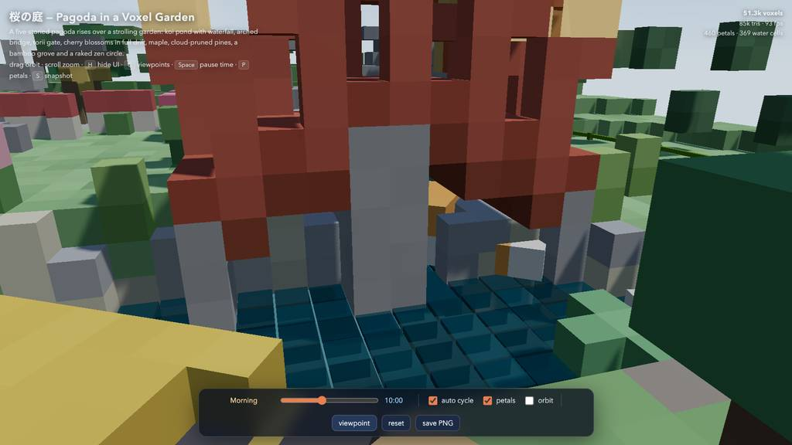
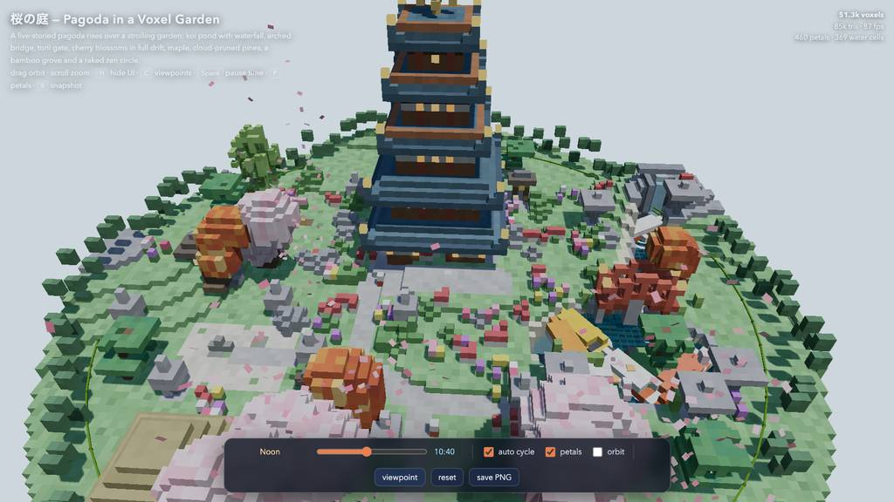

runs / 2026-10-26 / 125352-370000-strata-qwen3.8-fn-q4-1804a92d
五重塔庭園の単一ボクセルHTMLを47分で完成、18件のツールエラーから復旧し検証済み
qwen3.8-flash-next-unsloth-ud-q4_k_xl（Strata 0.1.48 / llama.cpp）が、ボクセルアート風の五重塔庭園を単一HTMLファイルにする課題を受けた。全71呼び出し・2833.9秒のうち最初の1453秒（51%）で pagoda-garden.html（49847バイト）を初稿作成から全面書き換えまで行い、残り時間でブラウザ検証と微調整を繰り返した。18件のツールエラーが出たが完了（exit code 0）し、ピークコンテキストは174057トークン（窓524288の33%）。
成果物
work/pagoda-garden.html（49,847 バイト）をそのまま同梱している。重いシーンもあるため、必要なときだけ起動する。
pagoda-garden.html
49 KB · 起動するまで読み込まない












全 26 枚から等間隔に 12 枚を選んでいる。logs/events.jsonl の画像ブロックを内容ハッシュで重複排除して時系列に並べた、制作中の検証用スクリーンショット。最終版とは限らない。
成果物の構成
| 要素 | 内容 |
|---|---|
| 成果物 | 単一ファイル pagoda-garden.html、1037行・約50KB、Three.js はCDN読み込みのため初回のみ要ネット接続 |
| 五重塔 | 石積み基壇と入口階段、朱の扉枠と額、格子窓、手すり付き回廊、金具付き反り屋根、提灯、九輪と月輪宝珠の相輪 |
| 庭園 | 鯉池（石縁、睡蓮と蓮、島）、断崖の滝と水飛沫の甌穴池、葦の川、朱のアーチ橋、鳥居と石灯籠、茶屋、祠、鐘、井戸、蹲踞、枯山水、敷石の道、石灯籠15基、竹藪44本 |
| 樹木 | 桜5、楓3、庭園仕立の松5、低木・花・キノコ・倒木、周囲の竹柵と森林リング |
| 動的要素 | 風に流れて水着地・波紋化する花びら460枚、巡回する鯉7匹と波紋、水面プレートと泡、夜間ホタル90、滝と滴のパーティクル、緩速軌道カメラ |
| 雰囲気 | 昼夜サイクル（自動/スライダー）、太陽・月スプライト、10キーの空・霧・光補間、夕暮れ時の窓と灯籠のHDR点灯、夜間影オフ、ACESとUnrealBloom |
| 操作 | 昼夜スライダーと時計表示、サイクル/花びら/軌道切替、名前付きビューポイント6とイージング遷移、リセット、PNG保存、キーボード操作、ボクセル/三角形/FPS統計 |
| レンダリング | 静的ジオメトリは3つのマージ済みメッシュにベイクし内面を除去、面ごと方向陰影＋ボクセル色ジッタで約10ドローコール、51.3kボクセル/85k三角形・80fps超 |
| 検証 | ヘッドレスChromiumでコンソールエラーゼロ、昼夜・全6視点のスクリーンショット、ダウンロード経路確認、初期スクショでの橋/航空構図の衝突を後調整 |
モデルの最終メッセージから読み取った内容。コードの確認はしていない。
タイムライン
71 回の API 呼び出しを時間順に並べた。上段の帯の幅が各呼び出しの所要時間で、帯の間の空白がツールの実行時間。下段はその時点のコンテキスト長。細い帯は、エージェントが別に投げた補助リクエスト（画像判定など）。 upstream が usage を返さない場合は、events.jsonl の message_end から復元する。復元できない値は ? で示す。
最も長い 2 回の生成（#5 435 秒・#3 393 秒）で 828.2 秒、壁時計の 29.2%。出力トークンの上位 4 回（#5・#3・#4・#2）で全体の 65.2%（83,997 / 128,842）。推論以外（ツール実行など）は約 167 秒（6%）。
フェーズ別の内訳
| フェーズ | 経過 | 所要 | 全体に占める割合 | 呼び出し | 出力 tok | 何をしたか |
|---|---|---|---|---|---|---|
| 生成と全面書換 | 0:00–24:13 | 1453 秒 | 51.3% | 5 | 84,546 | 補助呼び出し1件と作業ディレクトリ確認の後、単一HTMLの初稿を書き出し（out 24774トークン）、自分の出力を読み直して全面書き換えで確定（out 26321トークン）。この5件だけで1452.4秒を要した。 |
| 細部修正ラッシュ | 24:13–28:55 | 283 秒 | 10.0% | 13 | 14,357 | read/grep で対象領域を特定し、水位、睡蓮、鯉、水面波紋、花びら状態機械などを小さく編集した。範囲末尾が次行と重複して拒否されるPUTエラーが2件（E1, E8）、アンカー不一致が1件（E2）。 |
| 検証と改修の反復 | 28:55–35:36 | 401 秒 | 14.1% | 23 | 14,134 | テストサーバーでページを開き、コンソール確認とスクリーンショットから桜・樹冠の密度、夜間露光、影、橋アーチと地形リングの修正を反復。E3 の browser.open 誤用を挟みつつ、#41 でラウンド4検証まで実施。 |
| 整理と中間検証 | 35:36–38:17 | 161 秒 | 5.7% | 5 | 4,183 | 鳥居とビューの読直しの後、grep で死んだコードを特定して除去し、参照残りが無いことを確認、最終検証ラウンドを実行した。 |
| 橋視点と発光調整 | 38:17–45:19 | 421 秒 | 14.9% | 19 | 8,534 | 橋と航空ビューの再フレーミング、橋脚を壁埋めから実柱へ置き換え、bloom/glow 倍率調整を続けた。アンカー不一致エラーが7件（E9〜E15）連続発生し、そのつど read/grep を挟んで再試行した。 |
| 保存検証と報告 | 45:19–47:12 | 114 秒 | 4.0% | 6 | 3,088 | save-PNG とスナップショットダウンロードをテスト（タブ占有 E16、未定義変数 E17、API誤用 E18 の3エラー）。成果物の統計確認とサーバー停止後、#71 で最終報告を出力した。 |
フェーズの切れ目は、ログから読み取れる作業内容の変わり目（LLM による区切り）。所要時間は、そのフェーズの最初の呼び出しの開始から次のフェーズの最初の呼び出しの開始まで。
71 回の呼び出しを表で見る
| # | 種別 | フェーズ | 開始 | 所要 秒 | prompt | うち cache | 出力 | tok/s | HTTP | ツール |
|---|---|---|---|---|---|---|---|---|---|---|
| 1 | 補助 | 生成と全面書換 | 0:00 | 10.5 | 180 | 0 | 549 | 57.2 | 200 | — |
| 2 | 主ループ | 生成と全面書換 | 0:00 | 319.7 | 8,003 | 7,812 | 16,446 | 53.3 | 200 | bash |
| 3 | 主ループ | 生成と全面書換 | 5:20 | 393.4 | 24,585 | 7,998 | 24,774 | 64.1 | 200 | write |
| 4 | 主ループ | 生成と全面書換 | 11:53 | 304.5 | 49,402 | 49,360 | 16,456 | 54.2 | 200 | read |
| 5 | 主ループ | 生成と全面書換 | 16:58 | 434.8 | 68,066 | 65,858 | 26,321 | 60.8 | 200 | write |
| 6 | 主ループ | 細部修正ラッシュ | 24:13 | 109.9 | 94,430 | 94,386 | 5,847 | 53.6 | 200 | read |
| 7 | 主ループ | 細部修正ラッシュ | 26:03 | 52.4 | 105,450 | 100,277 | 2,788 | 55.8 | 200 | edit |
| 8 | 主ループ | 細部修正ラッシュ | 26:55 | 4.2 | 109,138 | 108,238 | 153 | 56.3 | 200 | read |
| 9 | 主ループ | 細部修正ラッシュ | 26:59 | 24.2 | 113,591 | 109,290 | 1,184 | 54.0 | 200 | read |
| 10 | 主ループ | 細部修正ラッシュ | 27:24 | 2.9 | 115,268 | 114,775 | 89 | 53.1 | 200 | read |
| 11 | 主ループ | 細部修正ラッシュ | 27:27 | 3.9 | 115,955 | 115,357 | 134 | 51.1 | 200 | grep |
| 12 | 主ループ | 細部修正ラッシュ | 27:31 | 17.1 | 116,241 | 116,088 | 938 | 57.8 | 200 | edit |
| 13 | 主ループ | 細部修正ラッシュ | 27:48 | 10.0 | 117,259 | 117,179 | 503 | 53.8 | 200 | edit |
| 14 | 主ループ | 細部修正ラッシュ | 27:58 | 7.5 | 118,163 | 117,765 | 338 | 53.2 | 200 | grep |
| 15 | 主ループ | 細部修正ラッシュ | 28:05 | 10.7 | 118,519 | 118,502 | 626 | 60.5 | 200 | edit |
| 16 | 主ループ | 細部修正ラッシュ | 28:16 | 25.9 | 120,718 | 119,144 | 1,185 | 49.4 | 200 | edit |
| 17 | 主ループ | 細部修正ラッシュ | 28:42 | 4.4 | 122,205 | 121,904 | 181 | 54.4 | 200 | grep |
| 18 | 主ループ | 細部修正ラッシュ | 28:46 | 9.1 | 122,897 | 122,385 | 391 | 49.4 | 200 | edit |
| 19 | 主ループ | 検証と改修の反復 | 28:55 | 3.9 | 123,820 | 123,288 | 149 | 56.4 | 200 | bash |
| 20 | 主ループ | 検証と改修の反復 | 29:00 | 3.3 | 124,036 | 123,969 | 128 | 54.7 | 200 | bash |
| 21 | 主ループ | 検証と改修の反復 | 29:03 | 4.8 | 124,231 | 124,165 | 197 | 51.8 | 200 | eval |
| 22 | 主ループ | 検証と改修の反復 | 29:08 | 3.1 | 124,680 | 124,428 | 118 | 56.1 | 200 | eval |
| 23 | 主ループ | 検証と改修の反復 | 29:14 | 10.5 | 125,941 | 124,797 | 448 | 51.5 | 200 | eval |
| 24 | 主ループ | 検証と改修の反復 | 29:30 | 34.5 | 127,164 | 126,389 | 1,654 | 50.2 | 200 | edit |
| 25 | 主ループ | 検証と改修の反復 | 30:05 | 3.5 | 129,031 | 128,818 | 110 | 44.5 | 200 | read |
| 26 | 主ループ | 検証と改修の反復 | 30:08 | 10.6 | 130,241 | 129,141 | 487 | 55.2 | 200 | edit |
| 27 | 主ループ | 検証と改修の反復 | 30:19 | 6.3 | 131,271 | 130,728 | 278 | 55.1 | 200 | eval |
| 28 | 主ループ | 検証と改修の反復 | 30:37 | 53.3 | 133,667 | 131,549 | 2,584 | 50.5 | 200 | edit |
| 29 | 主ループ | 検証と改修の反復 | 31:30 | 5.4 | 136,610 | 136,252 | 205 | 48.5 | 200 | edit |
| 30 | 主ループ | 検証と改修の反復 | 31:35 | 2.9 | 137,024 | 136,815 | 103 | 54.2 | 200 | grep |
| 31 | 主ループ | 検証と改修の反復 | 31:38 | 11.5 | 137,781 | 137,126 | 599 | 58.5 | 200 | edit |
| 32 | 主ループ | 検証と改修の反復 | 31:50 | 7.4 | 139,088 | 138,382 | 283 | 47.0 | 200 | edit |
| 33 | 主ループ | 検証と改修の反復 | 31:57 | 4.6 | 139,534 | 139,372 | 179 | 49.2 | 200 | edit |
| 34 | 主ループ | 検証と改修の反復 | 32:02 | 7.3 | 139,871 | 139,714 | 354 | 54.9 | 200 | eval |
| 35 | 主ループ | 検証と改修の反復 | 32:24 | 118.7 | 141,257 | 7,998 | 3,490 | 51.3 | 200 | grep |
| 36 | 主ループ | 検証と改修の反復 | 34:23 | 10.6 | 145,493 | 144,747 | 480 | 52.0 | 200 | edit |
| 37 | 主ループ | 検証と改修の反復 | 34:34 | 6.2 | 146,165 | 145,974 | 265 | 51.3 | 200 | grep |
| 38 | 主ループ | 検証と改修の反復 | 34:40 | 7.2 | 146,635 | 146,429 | 371 | 59.7 | 200 | edit |
| 39 | 主ループ | 検証と改修の反復 | 34:47 | 12.7 | 147,872 | 147,005 | 594 | 52.9 | 200 | edit |
| 40 | 主ループ | 検証と改修の反復 | 35:00 | 8.6 | 148,546 | 148,466 | 428 | 54.4 | 200 | edit |
| 41 | 主ループ | 検証と改修の反復 | 35:09 | 13.3 | 149,171 | 148,973 | 630 | 52.4 | 200 | eval |
| 42 | 主ループ | 整理と中間検証 | 35:36 | 95.3 | 150,172 | 7,812 | 2,027 | 49.0 | 200 | read |
| 43 | 主ループ | 整理と中間検証 | 37:11 | 16.4 | 153,030 | 152,199 | 732 | 49.0 | 200 | grep |
| 44 | 主ループ | 整理と中間検証 | 37:28 | 16.0 | 154,346 | 153,763 | 788 | 53.4 | 200 | edit |
| 45 | 主ループ | 整理と中間検証 | 37:44 | 5.2 | 155,967 | 155,134 | 190 | 50.7 | 200 | grep |
| 46 | 主ループ | 整理と中間検証 | 37:49 | 8.1 | 156,175 | 156,158 | 446 | 58.0 | 200 | eval |
| 47 | 主ループ | 橋視点と発光調整 | 38:17 | 72.3 | 157,101 | 7,812 | 714 | 47.5 | 200 | edit |
| 48 | 主ループ | 橋視点と発光調整 | 39:30 | 2.6 | 157,942 | 157,815 | 106 | 59.6 | 200 | edit |
| 49 | 主ループ | 橋視点と発光調整 | 39:33 | 3.2 | 158,201 | 158,047 | 123 | 54.4 | 200 | edit |
| 50 | 主ループ | 橋視点と発光調整 | 39:36 | 3.3 | 158,477 | 158,323 | 120 | 50.5 | 200 | edit |
| 51 | 主ループ | 橋視点と発光調整 | 39:39 | 5.9 | 158,772 | 158,597 | 273 | 54.3 | 200 | eval |
| 52 | 主ループ | 橋視点と発光調整 | 39:58 | 88.2 | 159,298 | 7,812 | 1,612 | 51.9 | 200 | edit |
| 53 | 主ループ | 橋視点と発光調整 | 41:26 | 2.0 | 161,034 | 160,910 | 67 | 55.7 | 200 | read |
| 54 | 主ループ | 橋視点と発光調整 | 41:28 | 10.5 | 161,654 | 161,101 | 459 | 49.5 | 200 | edit |
| 55 | 主ループ | 橋視点と発光調整 | 41:39 | 6.3 | 162,294 | 162,113 | 298 | 55.3 | 200 | edit |
| 56 | 主ループ | 橋視点と発光調整 | 41:45 | 6.4 | 162,769 | 162,592 | 291 | 52.8 | 200 | eval |
| 57 | 主ループ | 橋視点と発光調整 | 42:03 | 70.5 | 163,231 | 7,812 | 640 | 51.8 | 200 | edit |
| 58 | 主ループ | 橋視点と発光調整 | 43:14 | 8.8 | 164,047 | 163,870 | 439 | 55.5 | 200 | eval |
| 59 | 主ループ | 橋視点と発光調整 | 43:38 | 49.5 | 164,845 | 138,884 | 1,883 | 50.6 | 200 | edit |
| 60 | 主ループ | 橋視点と発光調整 | 44:28 | 5.5 | 166,851 | 166,728 | 231 | 49.6 | 200 | read |
| 61 | 主ループ | 橋視点と発光調整 | 44:33 | 7.9 | 167,460 | 167,082 | 351 | 52.3 | 200 | edit |
| 62 | 主ループ | 橋視点と発光調整 | 44:41 | 5.5 | 168,002 | 167,810 | 229 | 50.9 | 200 | edit |
| 63 | 主ループ | 橋視点と発光調整 | 44:47 | 3.6 | 168,397 | 168,231 | 135 | 50.5 | 200 | grep |
| 64 | 主ループ | 橋視点と発光調整 | 44:50 | 6.3 | 168,939 | 168,532 | 276 | 54.4 | 200 | edit |
| 65 | 主ループ | 橋視点と発光調整 | 44:57 | 6.3 | 169,707 | 169,216 | 287 | 56.9 | 200 | eval |
| 66 | 主ループ | 保存検証と報告 | 45:19 | 33.3 | 170,303 | 138,884 | 983 | 50.1 | 200 | eval |
| 67 | 主ループ | 保存検証と報告 | 46:08 | 8.2 | 171,669 | 171,285 | 390 | 54.9 | 200 | eval |
| 68 | 主ループ | 保存検証と報告 | 46:17 | 6.3 | 172,284 | 172,059 | 317 | 58.5 | 200 | eval |
| 69 | 主ループ | 保存検証と報告 | 46:23 | 7.8 | 172,866 | 172,600 | 367 | 54.2 | 200 | eval |
| 70 | 主ループ | 保存検証と報告 | 46:43 | 15.8 | 173,650 | 155,268 | 328 | 48.9 | 200 | bash + write |
| 71 | 主ループ | 保存検証と報告 | 46:59 | 13.5 | 174,057 | 173,979 | 703 | 54.7 | 200 |
試行錯誤
ツールがエラー（isError）を返した結果の一覧。ツールは成功したのにモデル自身が内容を壊したケースは、ここには出ない。
エラーとして記録された 18 件
| 経過 | ツール | 起きたこと | 分類 |
|---|---|---|---|
| 27:48 | edit | PUT範囲の末尾が直後1行と重複し、範囲の完全な最終内容より短すぎて拒否された。`PUT 928.=944:` rejected: the body ends by restating the 1 line(s) just below the range, but is too short to be the full final content of the selected range. Re-issue with the range covering exactly t | 編集範囲拒否 |
| 28:42 | edit | 先行readで一度も表示されていない行（23, 42, 425, 665-666）を指すeditが拒否された。This edit anchors to lines 23, 42, 425, 665-666 of pagoda-garden.html that [pagoda-garden.html#B24B] never displayed (it showed a partial range, a search hit, or a folded summary). Actual file content | アンカー不一致 |
| 29:08 | eval | browser.open にURLを直接渡す呼び方で、options オブジェクトが必要とTypeError。TypeError: browser.open() expects an options object; pass the URL inside it: browser.open({ url, name }) at open ([eval-prelude:browser]:262:24) at <anonymous> (js-cell-e833274a-a15d-429f-afdb-bbe5938 | API 誤用 |
| 30:05 | edit | 未表示の行（476, 481-482, 485-486）を指すeditが拒否された。This edit anchors to lines 476, 481-482, 485-486 of pagoda-garden.html that [pagoda-garden.html#F0D5] never displayed (it showed a partial range, a search hit, or a folded summary). Actual file conten | アンカー不一致 |
| 31:30 | edit | 未表示の行（627-634, 636）を指すeditが拒否された。This edit anchors to lines 627-634, 636 of pagoda-garden.html that [pagoda-garden.html#EC0B] never displayed (it showed a partial range, a search hit, or a folded summary). Actual file content at thos | アンカー不一致 |
| 31:57 | edit | 未表示の行（856-857）を指すeditが拒否された。This edit anchors to lines 856-857 of pagoda-garden.html that [pagoda-garden.html#0DAC] never displayed (it showed a partial range, a search hit, or a folded summary). Actual file content at those lin | アンカー不一致 |
| 34:34 | edit | 未表示の行（988-989）を指すeditが拒否された。This edit anchors to lines 988-989 of pagoda-garden.html that [pagoda-garden.html#E078] never displayed (it showed a partial range, a search hit, or a folded summary). Actual file content at those lin | アンカー不一致 |
| 35:00 | edit | 372〜374行のPUTがE1と同様、次行の重複と内容不足で拒否された。`PUT 372.=374:` rejected: the body ends by restating the 1 line(s) just below the range, but is too short to be the full final content of the selected range. Re-issue with the range covering exactly t | 編集範囲拒否 |
| 39:30 | edit | 未表示の行985を指すeditが拒否された。This edit anchors to lines 985 of pagoda-garden.html that [pagoda-garden.html#235C] never displayed (it showed a partial range, a search hit, or a folded summary). Actual file content at those lines: | アンカー不一致 |
| 39:32 | edit | 行を1つずらしたが再び未表示の行986を指して拒否された。This edit anchors to lines 986 of pagoda-garden.html that [pagoda-garden.html#235C] never displayed (it showed a partial range, a search hit, or a folded summary). Actual file content at those lines: | アンカー不一致 |
| 39:36 | edit | 3度目の試行も未表示の行987を指して拒否された。This edit anchors to lines 987 of pagoda-garden.html that [pagoda-garden.html#235C] never displayed (it showed a partial range, a search hit, or a folded summary). Actual file content at those lines: | アンカー不一致 |
| 41:26 | edit | 橋脚のeditが未表示の行373を指して拒否された。This edit anchors to lines 373 of pagoda-garden.html that [pagoda-garden.html#42C8] never displayed (it showed a partial range, a search hit, or a folded summary). Actual file content at those lines: | アンカー不一致 |
| 44:28 | edit | 未表示の行992を指すeditが拒否された。This edit anchors to lines 992 of pagoda-garden.html that [pagoda-garden.html#DDBA] never displayed (it showed a partial range, a search hit, or a folded summary). Actual file content at those lines: | アンカー不一致 |
| 44:41 | edit | bloom/glow調整のeditが未表示の行956-957を指して拒否された。This edit anchors to lines 956-957 of pagoda-garden.html that [pagoda-garden.html#DDBA] never displayed (it showed a partial range, a search hit, or a folded summary). Actual file content at those lin | アンカー不一致 |
| 44:47 | edit | 未表示の行864, 958を指すeditが拒否された。This edit anchors to lines 864, 958 of pagoda-garden.html that [pagoda-garden.html#DDBA] never displayed (it showed a partial range, a search hit, or a folded summary). Actual file content at those li | アンカー不一致 |
| 45:52 | eval | 同じタブが他呼び出しで使用中というbusyエラーでevalが失敗した。Reused tab "garden" on headless browser (hidden, shared) URL: http://127.0.0.1:8642/pagoda-garden.html Title: 桜の庭 — Pagoda in a Voxel Garden ToolError: Tab "garden" is busy: another call on this tab i | タブ占有競合 |
| 46:17 | eval | evalスクリプトで未定義の変数tによりReferenceErrorが発生した。ReferenceError: t is not defined at <anonymous> (js-cell-283dc8c9-0c8c-4550-9880-a83c2c84da82.js:3:23) at <anonymous> (js-cell-283dc8c9-0c8c-4550-9880-a83c2c84da82.js:22:3) at eval (unknown) at <anony | 変数未定義 |
| 46:23 | eval | 存在しない page.waitForTimeout を呼び出してTypeErrorとなった。Reused tab "garden" on headless browser (hidden, shared) URL: http://127.0.0.1:8642/pagoda-garden.html Title: 桜の庭 — Pagoda in a Voxel Garden TypeError: page.waitForTimeout is not a function. (In 'page | API 誤用 |
経過は、そのツールを呼んだターンの終了時刻。エラー本文は先頭 300 文字までで、パスや接続先は伏せてある。
気づいた点
計測データ（呼び出し一覧・エラー・最終メッセージ）だけから LLM が書いた読み取り。文中の数値は、上の KPI や表と照らして確認する。
前半51%は生成と全面書換
総経過2833.9秒のうち#2〜#5（t=0〜1453秒、1452.4秒）が初稿書き出しと全面書き換えに充てられ、初稿直後の#4では自分の出力16456トークンを再度読んでいる。#19以降の検証・調整は残り約1098秒（39%）で、後半は1件あたり3〜90秒の短い反復で構成された。
2回のwriteに出力4割
#3（24774トークン）と#5（26321トークン）の2書きで51095トークン、総出力128842の約40%を占める。残る69呼び出しの平均は約1130トークンで、大出力は初期実装と全面書き換えに集中した。
anchor失敗12回、読直しで回復
18エラーのうち12件は先行readで未表示の行を指すeditの拒否で、#53のread→#54のedit成功、#63のgrep→#64のedit成功のように失敗後に特定を挟んで回復している。一方#48〜#50では行番号を1ずつずらしただけの再試行が3連続で不発（E9〜E11）に終わった。
スクショ後にキャッシュ失効
eval検証直後のメイン呼び出し#35, #42, #47, #52, #57はcacheが7812〜7998に落ち、prefillが50.2〜58.0秒かかっている（他呼び出しはほぼ0.6〜2.4秒）。この5件のprefillだけで計約275秒、総時間の約10%を占める。
検証はeval15回と26ショット
evalが15回・スクリーンショット26枚で、#23, #34, #41, #46, #51, #56, #58, #65が修正後の視覚検証ラウンドに相当する。最終段階#66〜#69でsave-PNGとダウンロードを4回テストし、#70で成果物統計の確認とサーバー停止を行った。
入力と設定
Design and create a very creative, elaborate, and detailed voxel art scene of a pagoda in a beautiful garden with trees, including some cherry blossoms. Make the scene impressive and varied and use colorful voxels. Add as many details as possible to showcase your attention to them. Use whatever libraries to get this done but make sure I can paste it all into a single HTML file.
input/prompt.md の全文。SHA-256 は ceece4685b37…。
| omp の起動オプション | --print --mode json --thinking high --no-title --approval-mode yolo |
| upstream | （接続先は伏せている） |
| タイムアウト | 43,200 秒 |
config/00-omp.yml
setupVersion: 2 autolearn: enabled: false autoContinue: false